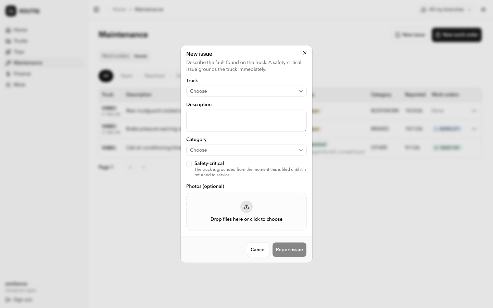
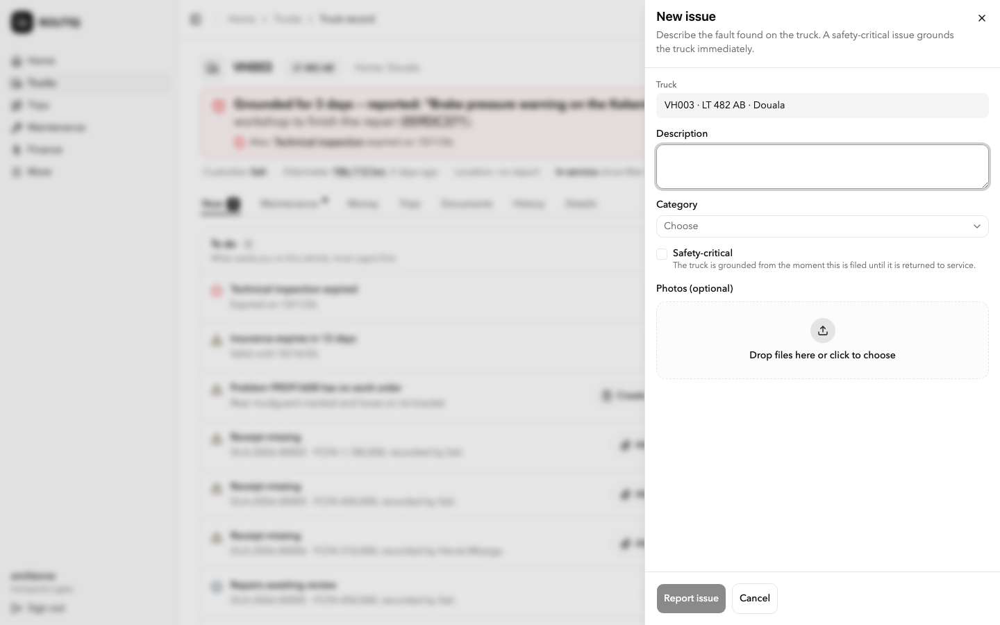

Audit findings
Five agents audited develop at 6399529: page anatomy, every form, actions and feedback, the visual system, and a live run of the app on desktop and phone (182 screenshots). The raw reports are in docs/design/consistency/audits/. The headline findings below were re-checked against the code; anything not seen in the running app is marked "code only".
Users notice these
Bugs and mismatches someone hits during normal work. These come first, before any re-layout.
| Finding | Evidence | Rule it breaks | |
|---|---|---|---|
| P0 | An approver can't open an entry from Approvals before deciding. Rows have no click target, so the receipt and postings are out of reach. The entry page has no Approve or Reject either. | FinanceApprovalsScreen.tsx passes neither onRowClick nor rowViewer (checked) | Queue archetype: the title opens the record panel with the decision in its footer |
| P0 | Trip detail and Record a trip have no breadcrumb trail. On a phone there is no way back up. | shell/breadcrumbs.ts:23-48; SiteHeader.tsx:33 needs 3 crumbs | Breadcrumb is the only back |
| P1 | The same status shows in different colours. "Waiting" entries are blue in Finance and amber in trips, maintenance and the vehicle. "Posted" is green in Finance and grey on the vehicle. "Closed" trips are grey in the list and green in the detail. | FinanceStatusBadge.tsx:11 vs ActivityMoney.tsx:15 (checked); panel/shared.tsx:162; activityColumns.tsx:50 vs TripState.tsx:29 | One status, one badge |
| P1 | Work-order approval and release notes are invisible: the Chronologie drops notes. | WorkOrderSheet.tsx:69-97 (code only) | Every timeline shows actor, act, note, time |
| P1 | The same expense is positive in the finance table and negative in trip detail. In English, 6 of 7 money inputs still format French-style. | entryColumns.tsx signDisplay; ActivityMoney; money-input.tsx:75,89 | One money formatter with explicit sign rules |
| P1 | Adding, renaming or deactivating a branch or user shows no confirmation; the dialog just closes. PIN reset shows a large inline success panel instead. | notify.ts:9-15 has no branches/users namespace (checked); MemberActionDialog.tsx:210-224 | Every success is one toast |
| P1 | Most tap targets on phone are below 44 px because the shared primitives default to 28 to 32 px. Every call site has to remember min-h-11, and many don't: the row ⋯ menu, pager, view options, filter chips, month arrows, selects. | ui/button.tsx:23 default h-8, ui/input.tsx:12 h-8 (checked); data-table.tsx:983,1028,915 | 44 px minimum, enforced in primitives |
| P1 | "Annuler" sits next to "Annuler l'ordre de travail" in the same footer. In English, "Close" means both close the trip and close the dialog. | fr.json:1126,1142,2300; en.json:755,1616 | A domain verb never equals a chrome verb |
| P2 | French screen-reader users hear English: "Close" on every sheet and "Toggle Sidebar". | ui/sheet.tsx:73; ui/sidebar.tsx:277,289,292 | All text through t() |
| P2 | A read-only viewer sees "Consultation seule" on desktop only. On a phone, nothing explains why the action bar is empty. | IdentityStrip.tsx:70-75; QuickActionBar.tsx:13 | Locked or read-only always says why |
Page anatomy
What's inconsistent
- Only Home, Trucks, Trip detail and the vehicle (Now, Money) open with an overview. Trips, Maintenance, Finance entries, Approvals, Periods and the settings lists open straight on a table.
- The KPI tile is built three ways:
MetricStrip,SectionCardsand the Money tab'sPeriodStats. - A finance entry opens three ways (row drawer, full page, vehicle panel); a trip opens as a page from the list and as a panel from the vehicle.
- The primary action has five homes: header button, toolbar
smbutton (28 px), a hand-styled Link plus yellow FAB (Trucks only), full-width buttons at the bottom (entry detail), and the vehicle's action bar. - Three tab styles: Finance pill tabs with badges, vehicle line tabs with markers, and Maintenance tabs held in local state (not linkable, not 44 px).
- Page widths disagree: entry detail 768 px, trip and vehicle 1152 px. Trip detail also switches width between loading and loaded.
Proposed rule
- Five archetypes (see them): Module list, Record workspace, Decision queue, Home, Settings list. Plus two form pages.
- One
MetricStripfor every overview strip, with tone and an optional filter link. - One detail surface per record type: a record workspace for big records, the record panel for sub-records.
- One tab component: URL-routed, 44 px, server counts.
PageContainerowns width for all states of a screen.
Source: audits/page-anatomy.md
Forms
What's inconsistent
- 17 native date inputs remain (5
date, 12datetime-local), against the AGENTS.md rule. Checked with grep. - Surfaces in use: 16 panel, 14 dialog, 1 page through
CommandForm, plus 5 hand-written Dialog forms (create branch, add user, register person, branch and member actions) and one AlertDialog (lock period). - Two form techniques: react-hook-form + zod (branches, members, persons, asset register, trip sheet, entry form) and
useState+ hand-written checks (trip actions, reading, document, note, fuel, decisions). Money and whole-number parsing is repeated in 6+ forms. - No form marks required fields. A missing required reason only disables the submit button, with no message.
- Submit labels: mostly "Enregistrer", but also "Créer", "Ajouter", verb phrases; button order is submit-first in panels and submit-last in dialogs.
- Create forms open as centered dialogs in Settings and as panels on the vehicle.
Proposed rule
- Three surfaces by job: panel for facts, dialog for decisions, page for long captures (details).
- Every form goes through
CommandForm+ react-hook-form + the contract schema. The hand-written dialogs move onto it. - A field kit (Text, Note, Money, Date, DateTime, Choice, Person, Vehicle, File, Reading) owns label, required marker, help, error and 44 px.
- Submit repeats the verb of the action and is always last.
- A six-test harness per form, plus guard tests (recipe).
Source: audits/forms-inventory.md (codex; read the correction note at the top)
Actions and feedback
What's inconsistent
- Destructive commands (reject, reverse, cancel WO, dismiss issue) use the default primary button inside
CommandForm; deactivate uses red. Reverse is red in the row menu and primary on the entry page. - Two row-menu components with different rules: DataTable hides unavailable items, the vehicle
RowMenushows them locked with a reason. - Locked actions are hidden in the vehicle header, the quick bar and tab actions, but shown with a reason in All actions and the record footer. Quick-bar slots shift between vehicles.
- Five pending labels ("Envoi…", "Envoi en cours…", "En cours…", "Enregistrement…", custom).
notifyCommandErroris unused. The generic error shows the raw code. - The same command has several labels: "Affecter" vs "Changer d'agence", "Saisir une fiche" vs "Démarrer un trajet", "Rejeter" vs "Refuser".
- History is reachable from trip and entry pages only; not from the finance drawer, the vehicle's entry panel or maintenance issues.
Proposed rule
- One label key per command, reused on every surface.
CommandForm tone="destructive"for refusals and cancels; reason required, marked, max 500.- Role forbids → hidden. State blocks → shown locked with the reason, on every surface. Quick-bar slots fixed.
- One row menu, one "Open" verb, destructive items marked.
- One pending label from the command status store; every success is a toast through
notify.ts. - Every record surface has the same History entry and the same timeline component.
Source: audits/actions-feedback.md
Visual system
What's inconsistent
- Titles: the page h1 is 24 px, the vehicle h1 is 16 to 18 px. Card titles use two font families (heading in
CardTitle, body in the vehicleCardHead). - Vertical rhythm between vehicle tabs runs from 12 px to 28 px; half of all Card uses strip the card spacing and rebuild it.
- Missing values show as "—" (32 places), "Not recorded" (10), "…", or blank.
- Icons: "add" is
Plus,FilePlus2,UserPlusorClipboardPlus; history isHistoryorClock. - Phone sheet heights: 85, 88 and 92 vh. Scrim black hard-coded in four primitives. Three tiny literal text sizes.
- Passenger preset says "Voyages" in the nav and "Trajets" in the tabs.
Proposed rule
- Named text variants: page title, section title, card title, overlay title, label, meta. Each owns family, size, weight.
- Section rhythm: 24 px between sections, 12 px inside a card.
- Missing value: "Not recorded" (or "Non renseigné"), with an inline "Add" when the user can fill it.
- An icon registry: one icon per concept, generic
Plusfor add. - One phone sheet height and one scrim token.
- Each preset ships one full vocabulary; a guard checks nav and tab labels agree.
Source: audits/visual-tokens.md (codex)
Seen in the running app
182 screenshots on an isolated slot (desktop 1440 × 900 and phone 390 × 844, English and French, admin role). No data changed. Raw report: audits/live-visual.md; six key shots in audits/shots/.


| Seen live | Screenshot | |
|---|---|---|
| P0 | The same fuel expense DLA-2026-00008 shows "+FCFA 86,000" in Finance and "−FCFA 86,000" in trip detail. Home puts "+" on every expense; the vehicle Money tab shows expenses unsigned. | 17-finance-entries, 24-trip-detail |
| P0 | Approvals "Economic date" column shows the submission date. Already filed as #55 (open). | 21-approvals; FinanceApprovalsScreen.tsx:127 |
| P1 | Trucks overview says "Attention 0" while VH003 is grounded with an expired inspection. | 02-trucks-list vs 03-vh003-now |
| P1 | Phone pages wider than the screen: Maintenance about 441 px in English and 561 px in French, People about 407 px ("Add a person" cut off). | 12-maintenance-list-phone-fr, 30-people-phone-en |
| P1 | New issue and New work order each open as a dialog from Maintenance and as a side sheet from the vehicle, with opposite button order. Record an expense is a full page from Finance and a sheet from the vehicle. | 15/38, 16/37, 20/35 |
| P1 | Input heights mix inside one form (32 px selects next to 44 px fields). Native date inputs show US format "10/04/2026, 01:07 PM" on French phones, next to app dates "04/10/2026 12:57". | 15, 34-form-log-fuel-phone-fr |
| P1 | Phone vehicle tabs are clipped ("Doc…") and don't scroll the active tab into view; on Details, "Maintenance" looks active. | 09-vh003-details-phone-en |
| P1 | "Issue" and "Problem" name the same thing, sometimes on one screen; raw codes BODYWORK / BRAKES / OTHER in the Issues table in both languages. | 38, 13-maintenance-issues-desktop-fr |
| P2 | Four tab styles (underline, grey segmented, black pill chips, outlined segmented). Four stat-card styles. Two pagination styles. | 03, 12, 05, 22 |
| P2 | Debug footer "TRUCKING v1 · created … · command d65f0997" on trip detail; "Job de halage" in French. | 24-trip-detail |
| P2 | French branch switcher truncated to "Toutes mes agen" on every page. | 03-vh003-now-desktop-fr |
| P2 | Entry detail and More are a narrow centred column; every other page is full width. The "View" button sits alone on its own row on most lists. | 19, 32, 23 |
| P2 | Money in three styles inside forms: "Amount (XAF)" label, "FCFA" prefix, or no unit. Amounts monospace in Finance and proportional on the vehicle. | 20, 40, 15 |
Fix order
Small slices, each with a guard test so the problem can't come back. Bugs first, then the shared pieces, then the screens move onto them.
| # | Slice | Guard that keeps it fixed | Size |
|---|---|---|---|
| 1 | Approvals rows open the entry in the record panel with Approve / Reject in its footer | Screen test: click entry number → panel with decision buttons | S |
| 1b | Data bugs seen live: one sign rule for money everywhere; Trucks "Attention" counts grounded vehicles; Approvals date (#55); phone overflow on Maintenance and People | Format tests per screen; 390 px no-horizontal-scroll check in pnpm verify | M |
| 1c | Sidebar hides Finance from roles that can't read it (#64); visibility from sections.ts data with group + read capability | sections.test.ts asserts each role's rows | S |
| 2 | Breadcrumb trails for trip detail and Record a trip | Test that every route in router.tsx has a trail | S |
| 3 | Primitives default to 44 px (Button, Input, Select, TabsList, DataTable controls, chips, sheet close) | Primitives test reads the class lists; ban h-8/h-9/size-sm on interactive controls in screens | M |
| 4 | One status presentation per domain (entry, trip, work order, issue, asset, document, member) | Ban local STATUS_TONES maps outside the domain's badge file | S |
| 5 | Command labels keyed by command name; dismiss wording; CommandForm tone="destructive"; submit always last | Locale test: no two keys under one surface share "Annuler"/"Close"; *.submit lint | M |
| 6 | Toasts for branches and users; remove the PIN inline panel; one pending label | Ban components/ui/toast imports outside notify.ts | S |
| 7 | DateField and DateTimeField in the registry; replace the 17 native inputs | Ban type="date" / datetime-local in src/ | M |
| 8 | Field kit + useCommandForm + form test harness; move the 5 hand-written dialogs and the useState forms onto it | Every *Form.tsx / *Dialog.tsx has a harness test | L |
| 9 | Panel as the default create surface: Settings creates, Record an entry (route opens the panel over Entries) | Allow-list of decision dialogs | M |
| 10 | Overview strips on Trips, Maintenance, Finance entries, Approvals; SectionCards and PeriodStats merged into MetricStrip | Archetype test per list screen: MetricStrip before DataTable | M |
| 11 | Record workspace shell for Trip detail and Finance entry detail; one detail surface per record type | Screen tests on region order | L |
| 12 | Money sign + locale, missing-value wording, text variants, icon registry | Ban literal "—" in JSX; ban Intl.NumberFormat outside lib/format | M |
| 12b | Navigation per sidebar.html: three groups, Finance pages as rows, Company out of More, name menu, counts, phone bottom bar, "What's coming" from the ported catalog | Per-role sidebar test; label = page title test | M |
| 13 | One timeline component with notes; History on every record surface | Test that WO approval notes render | M |